Great British Fish and Chips

Possibly the most well know and loved dish accross the UK Fish and Chips has won
and lost wars, marriages have ended and started with who gets the final chip in the newspaper.
Waste no time making the choice top try this meal and furthurmore embrace the British master race.
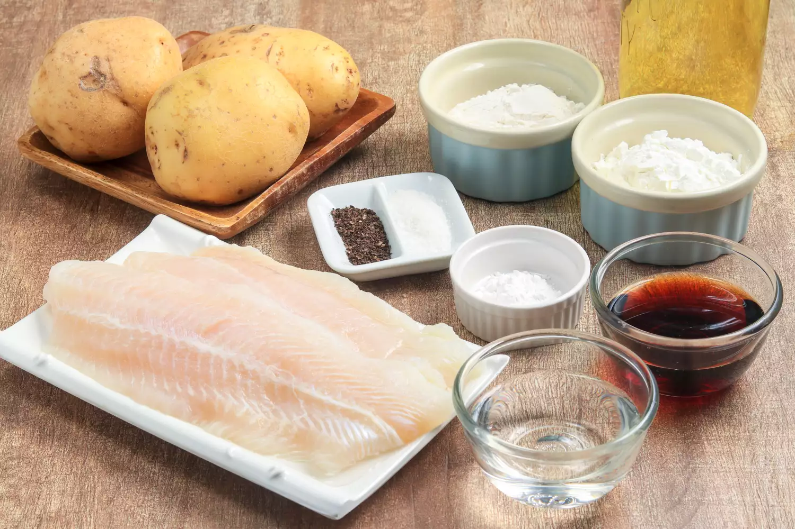
For the Fish
- 7 tablespoons all-purpose flour, divided
- 7tablespoons cornstarch
- 1 teaspoon baking powder
- sea salt
<1i>1 pinch freshly ground black pepper
- 1/3 cup dark beer, cold
- 1/3 cup sparkling water, cold
- 4 fish fillets (for the authentic experience Cod)
For the Chips
- 2 pounds potatoes
- 1 quart vegetable oil, or lard, for frying
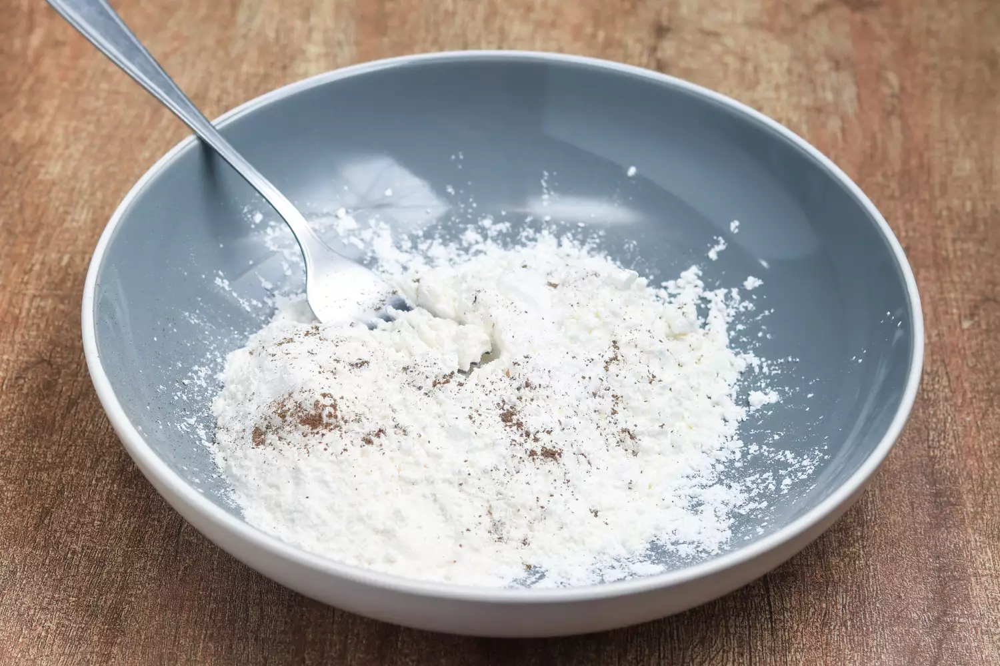
-
Set aside 2 tablespoons of flour. In a large, roomy bowl,
mix the remaining flour with the cornstarch and baking powder.
Season lightly with a tiny pinch of salt and pepper.
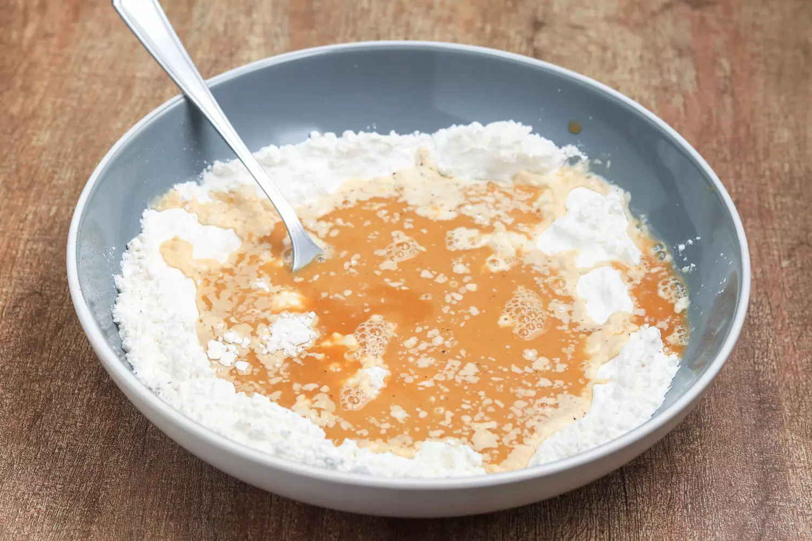
-
Using a fork to whisk continuously, add the beer and the
sparkling water to the flour mixture and continue mixing
until you have a thick, smooth batter. Place the batter
in the fridge to rest for between 30 minutes and 1 hour.
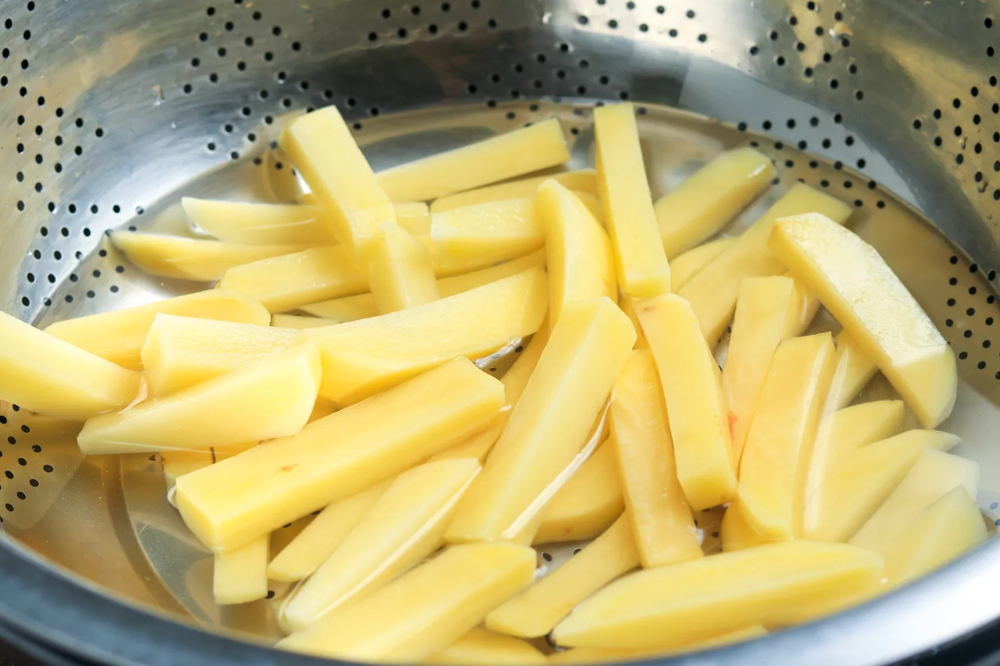
-
Meanwhile, cut the potatoes into a little less than
1/2-inch-thick slices, then slice these into 1/2-inch-wide
chips. Place the chips into a colander and rinse under cold
running water.

-
Place the washed chips into a pan of cold water. Bring to
a gentle boil and simmer for 3 to 4 minutes.
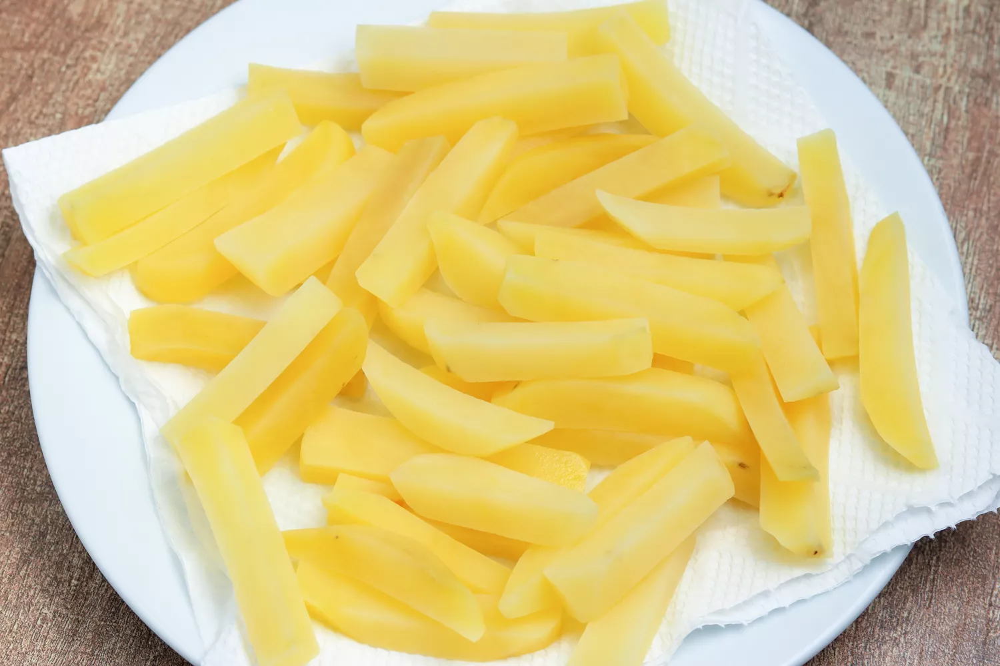
-
Drain carefully through a colander, then dry with paper
towels. Keep in the fridge covered with paper towels until needed.
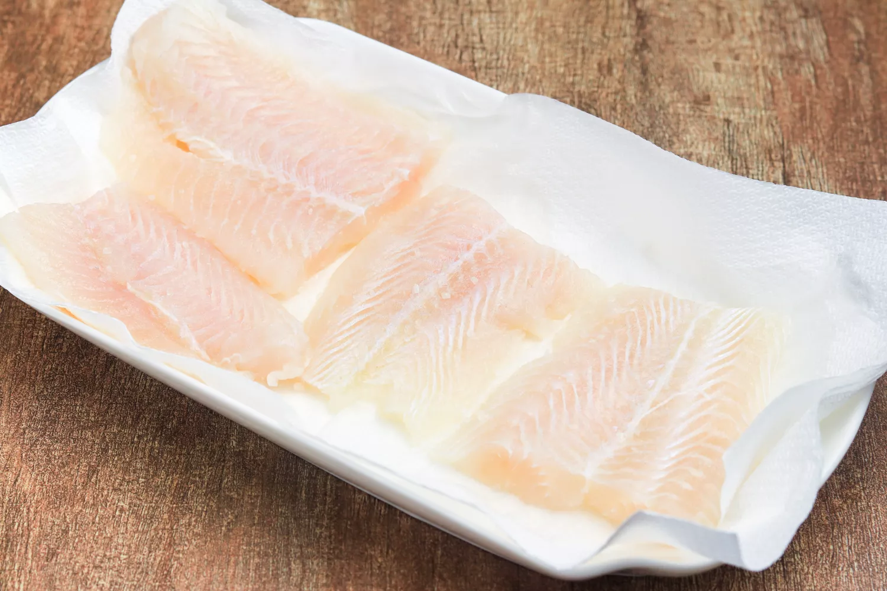
-
Meanwhile, lay the fish fillets on a paper towel and pat dry.
Season lightly with a little sea salt.
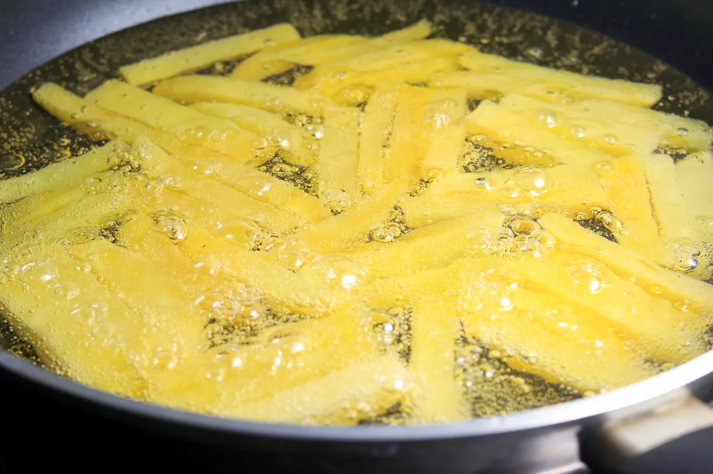
-
Heat the oil to 350 F in a deep-fat fryer or large, deep saucepan.
Cook the chips a few handfuls at a time in the fat for about 2
minutes. Do not brown them. Once the chips are slightly cooked,
remove them from the fat and drain. Keep to one side.
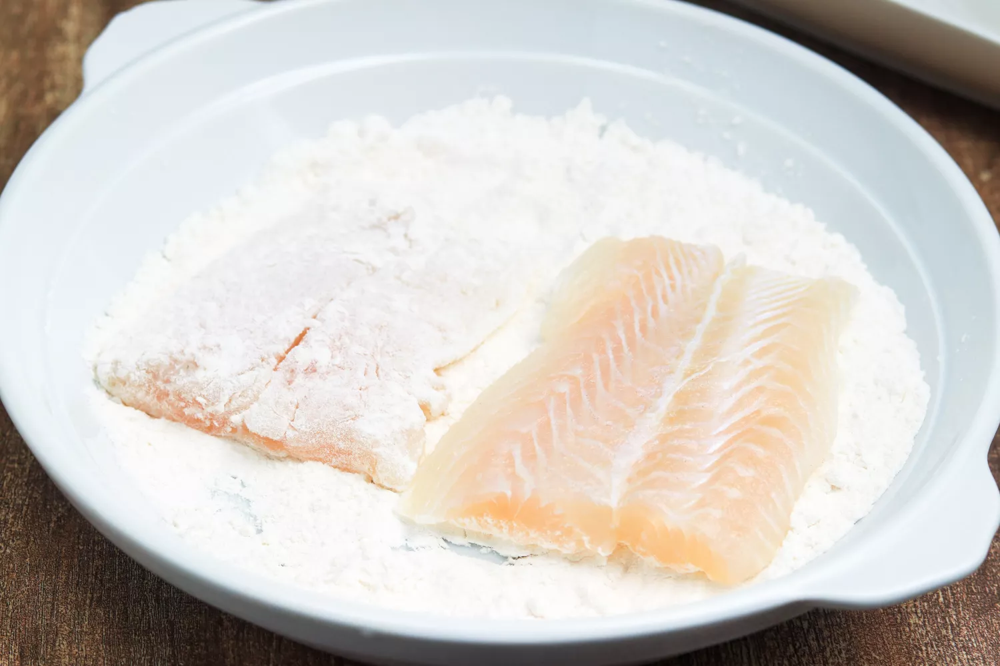
-
Place the 2 tablespoons of flour reserved from the batter mix into
a shallow bowl. Toss each fish fillet in the flour and shake off any excess.
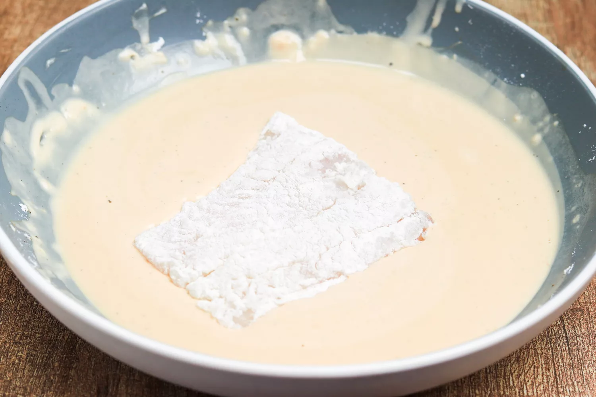
-
Dip into the batter, coating the entire fillet.
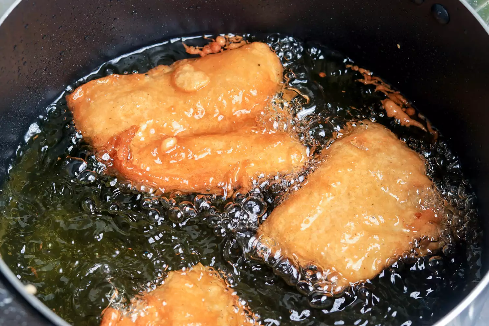
-
Check that the oil temperature is still 350 F. Carefully lower each
fillet into the hot oil. Fry for approximately 8 minutes, or until the
batter is crisp and golden, turning the fillets from time to time with
a large slotted spoon.
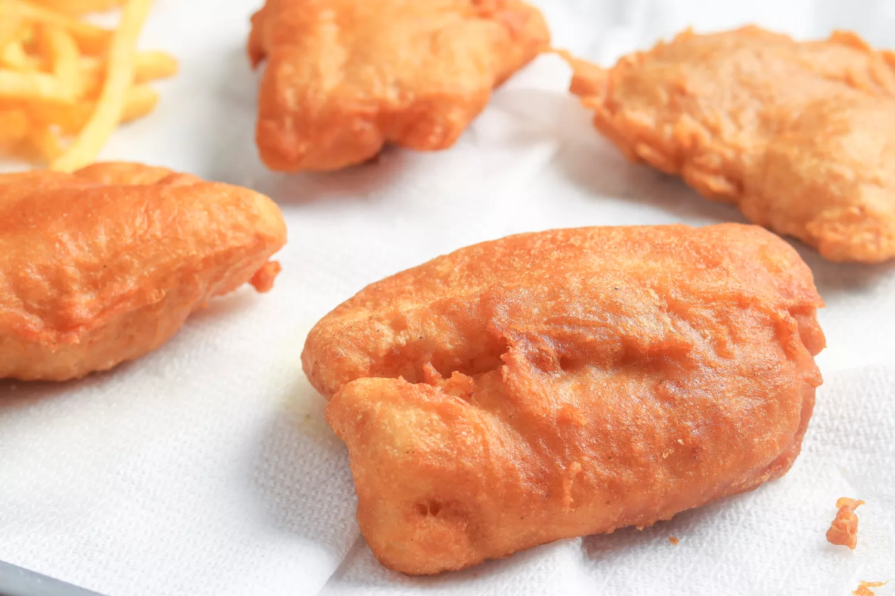
-
Once cooked, remove the fillets from the hot oil and drain on paper
towels. Sprinkle with salt. Cover with greaseproof paper (parchment paper)
and keep hot.
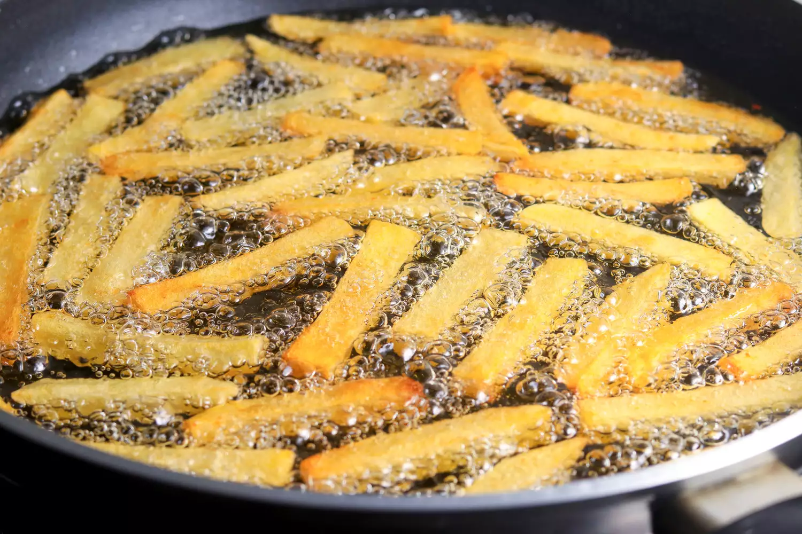
-
Heat the oil to 400 F, then cook the chips until golden and crisp, or about
5 minutes. Remove from the oil and drain. Season with salt.
-
Serve immediately with the hot fish accompanied by your favorite condiment.
Fin
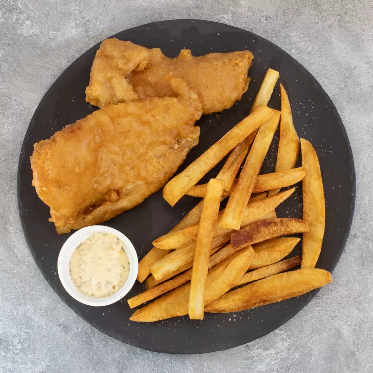
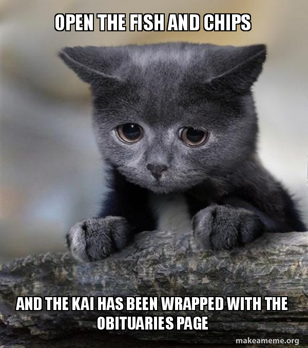